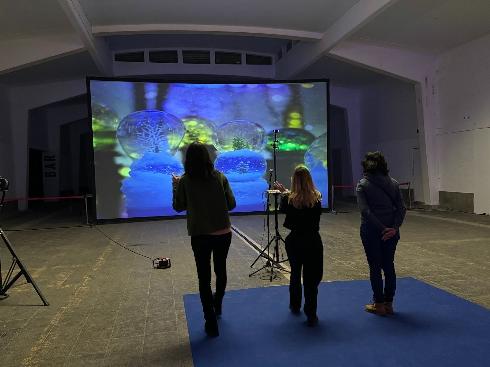

An interactive sound-reactive AI-art installation that ran nightly at both Metamersion III and Latent States Camp. Visitors moved through a space where their body shaped the sound and visual environment — pose estimation tracked anonymous movement data, exploring how states of consciousness affect physical expression.
An immersive environment where sound and visuals responded to the visitor’s body in real time. Pose estimation captured movement without identifying individuals. The installation ran from 22h to 02h — nighttime hours when perception shifts.
Like Altered Reflections, Submersion bridged both tracks — exhibited at Metamersion III as art and deployed at LSC as a research instrument. Movement data collected anonymously contributed to studies on how altered states of consciousness affect physical expression and spatial behaviour.